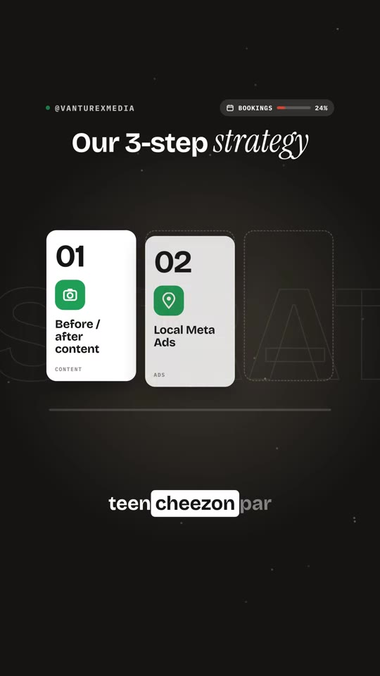
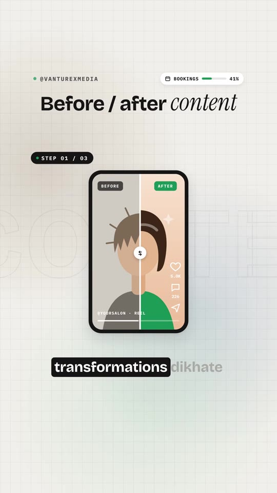
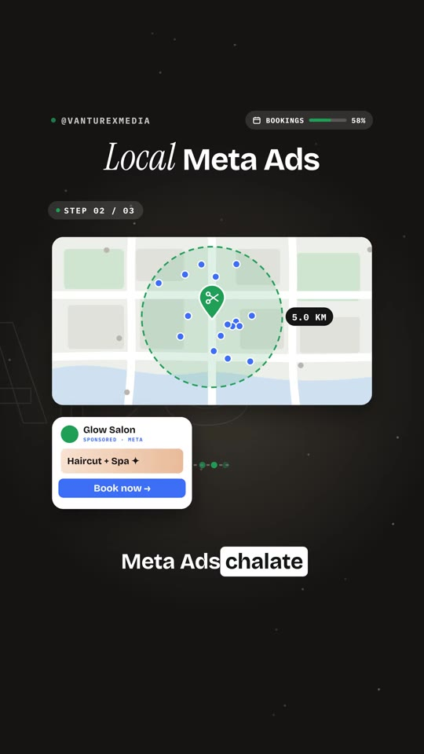
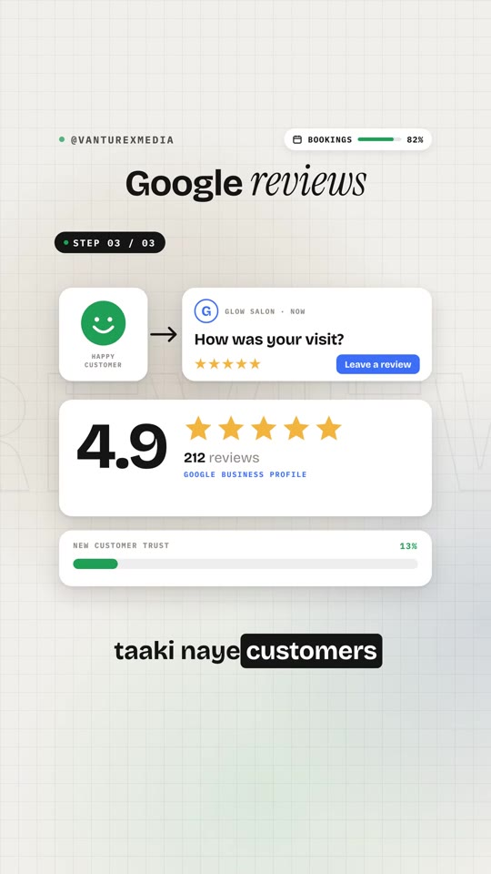

Marketing · Local-Business
3-Pillar Local Service Acquisition Funnel: Transforming Views into Bookings
A 3-pillar customer acquisition framework tailored for local service businesses (salons, aesthetic clinics, studios, wellness centers). Instead of eroding profit margins with steep discounts or chasing vanity follower counts, the strategy balances organic transformation reels, tight 5-kilometer radius Meta Ads for appointment scheduling, and automated Google Business Profile review collection to convert local foot traffic into recurring revenue.

Steps / Workflow
- Avoid Premature Discounting: Do not launch marketing campaigns with margin-destroying promotions (e.g. 30% off, BOGO). Discounts attract one-off bargain hunters rather than high-LTV loyal clientele.
- Pillar 1 — Before/After Transformation Content:
- Replace generic stock hairstyle photos or aesthetic product flat-lays with high-contrast split-screen video transformations.
- Show client challenges upon arrival vs. finished outcomes; capture live reactions to stimulate direct Instagram DM booking enquiries.
- Pillar 2 — Hyperlocal Meta Ads (5 km Radius):
- Pinpoint the physical salon/studio address on Meta Ads Manager map.
- Set a tight 5.0 km geofence with demographic age filtering matching target service buyers.
- Route ad clicks directly to instant booking mechanisms (WhatsApp business chat or Calendly/booking engine) offering packaged services (e.g., Haircut + Spa).
- Pillar 3 — Google Business Profile Review Engine:
- Prompt every satisfied customer post-service with an automated review link via SMS or QR stand at checkout.
- Drive Google profile ratings above 4.8 stars with 100+ authentic reviews to dominate local Google Maps search when prospects search “salon near me”.
Strategy Breakdown



Verbatim Breakdown
| Timestamp | Screen / Source | Verbatim Content |
|---|---|---|
00:00 |
On-screen text | If we managed your salon |
00:02 |
On-screen card | Not just discounts Flat 30% OFF × NOT STEP ONE × Margin ↓ × Loyalty ↓ |
00:06 |
On-screen cards | Our 3-step strategy 01 • Before / after content (Content) 02 • Local Meta Ads (Ads) 03 • Google reviews (Trust) → BOOKINGS |
00:07 |
Spoken (audio) | “Pehla: Instagram par sirf hairstyles nahi, real before-after transformations dikhate.” |
00:10 |
On-screen badges | DM Enquiries: +17 Reach: ↑ 3.8x |
00:12 |
Spoken (audio) | “Doosra: Salon ke aas-paas paanch kilometer mein Meta ads chalate direct appointment bookings ke liye.” |
00:18 |
Spoken (audio) | “Teesra: Har happy customer se Google review maangte taaki naye customers ka trust bane.” |
00:24 |
On-screen card | Views ≠ bookings 24.8K views → ...but bookings? 0 Booked appointments this week: 47 |
(caption) |
Post Caption | Agar hum aapke salon ki marketing handle karte, toh sirf followers badhane pe nahi, direct bookings pe focus karte. Here’s our 3-step strategy: 1. Real transformations 2. Hyperlocal Meta Ads 3. Google reviews Which step do you want to master first? Comment below! |
Tools & Tech Stack
- Meta Ads Manager: Radius geographic pin-drop (1–5 km) centered on business latitude/longitude with Lead Generation or WhatsApp Click-to-Chat objectives.
- Google Business Profile (GBP): Local SEO profile optimization, category tagging, and automated SMS review requests via tools like Birdeye or WhatsApp Business Quick Replies.
- Appointment Scheduling: Fresha, Zenoti, Calendly, or WhatsApp Business Catalog integrated into ad destination URLs.
Try This
- Audit your last 10 social posts: if more than 50% are flat aesthetic photos without transformation context, shoot 3 split-screen before-and-after reels showing client haircuts or skin treatments.
- Launch a Meta Ads campaign with a ₹300–500/day budget set to a 5 km radius around your location, targeting women aged 22–50 with a “Book Consultation / New Client Package” call to action.
- Create a short Google Review QR code sticker and place it directly on the front payment counter and mirrors.
Open Questions
- Radius sizing in metropolitan versus Tier 2/3 cities: In dense metro areas (e.g. Mumbai, Bangalore), a 5 km radius may span across 45-minute commute zones; tightening the radius to 2–3 km is often necessary to avoid lost appointments due to traffic friction.